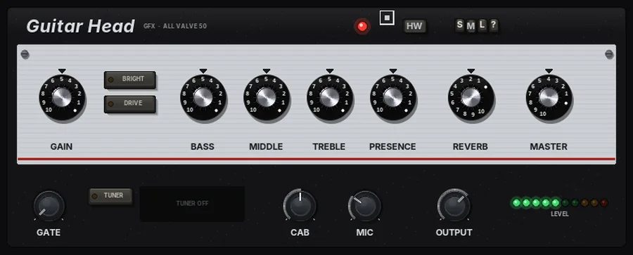
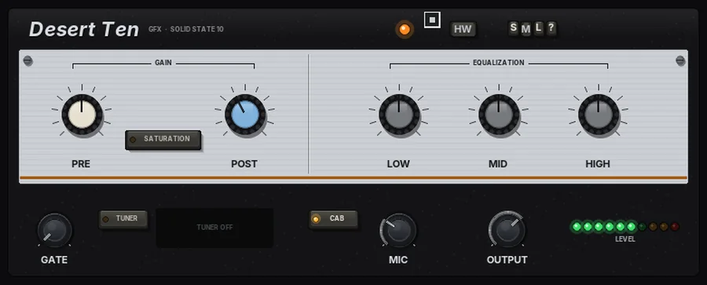
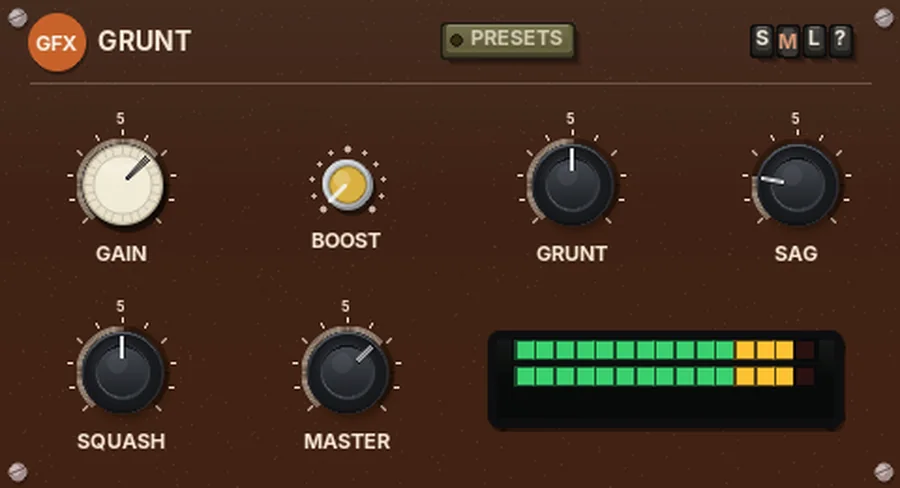
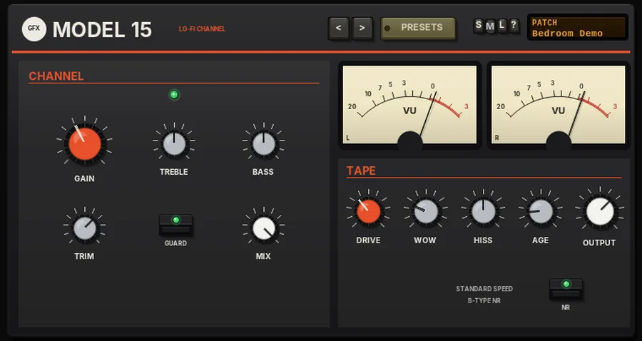
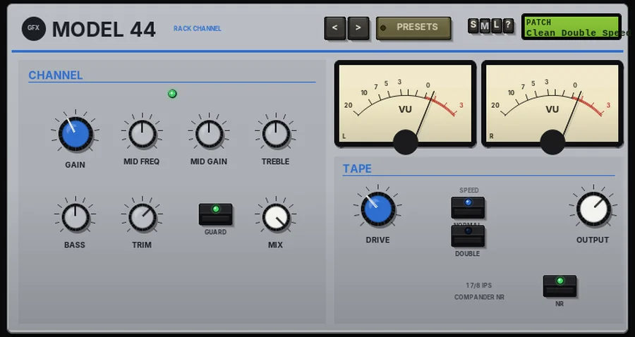
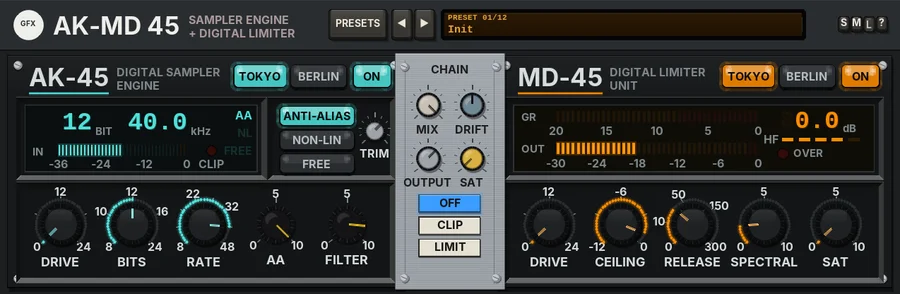

Amps & drive at a glance
Amp heads, a practice combo, a preamp and a tape saturator. Click a plug-in for its panel; each one has its manual PDF and a download.
| Plug-in | In the spirit of | Main features | Best for |
|---|---|---|---|
 Guitar HeadPanel | Classic 50-watt valve heads |
| Guitar from sparkle to crunch |
 Bass HeadPanel Bass HeadPanel | Classic 300-watt all-valve bass heads |
| Big, round bass tone |
 Desert TenPanel | Little 10-watt solid-state practice combos |
| Raspy, fuzzy desert-rock guitar |
 PreampPanel PreampPanel | Colour preamps |
| Adding colour and drive to anything |
 Preamp QPanel Preamp QPanel | Colour preamps with a console channel EQ |
| Colour and tone shaping in one |
 HeadPanel HeadPanel | One-knob tape saturators |
| Tape warmth on tracks and buses |
 GruntPanel | Warm drive pedals |
| Weight on bass and guitar |
 Model 15Panel | Early-80s portable cassette four-tracks |
| Boxy lo-fi stems |
 Model 44Panel | Early-90s rack portable studios |
| Warm tape colour |
 PenguinDrivePanel PenguinDrivePanel | A 70s live guitar rig |
| Funky lead guitar |
 TS-7Panel TS-7Panel | Classic tape and transformer boxes |
| Tape warmth on buses |
 Ten RackPanel Ten RackPanel | 80s compact pedal series |
| Guitar and synth pedalboards |
 Stimm 45Panel Stimm 45Panel | 80s Eastern Bloc laboratory tuners |
| Tuning guitars, basses and anything else |
 AK-MD 45Panel | Late-80s samplers and 90s disc-recorder limiters |
| Lo-fi drums, crunch and squash |
 Drive-45Panel Drive-45Panel | Multi-circuit drive boxes, rebuilt as studio racks |
| Bus warmth, crunchy drums, driven synths |